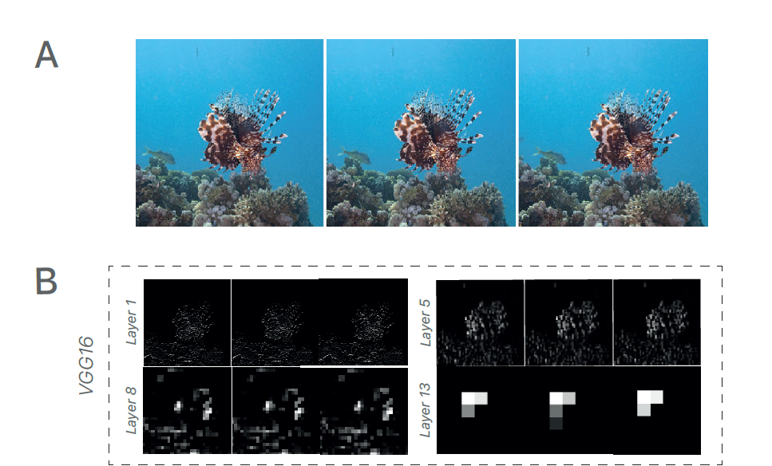
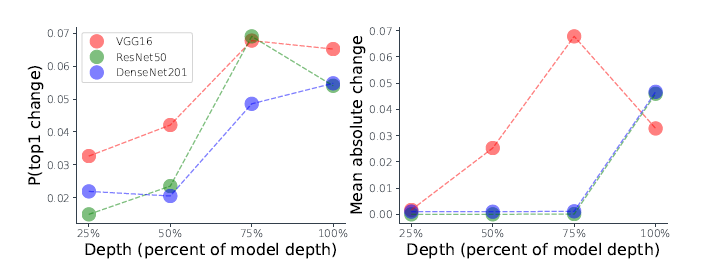
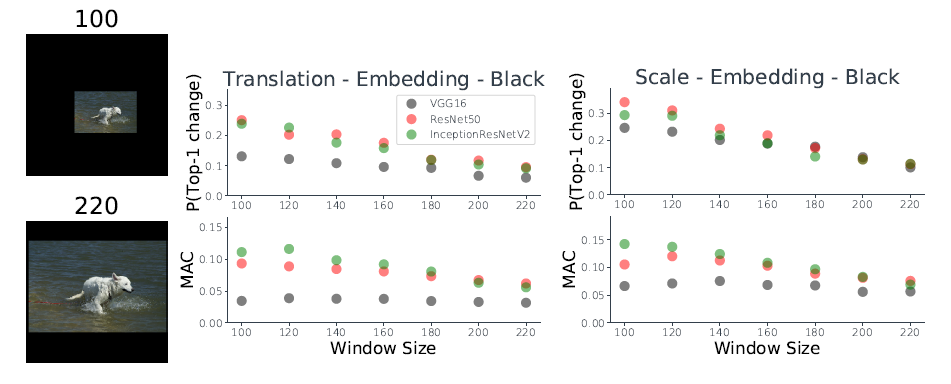

本文主要记录了关于论文 Why do deep convolutional networks generalize so poorly to small image transformations 所表达的内容。
这篇文章实在是太难读了，看着非常不舒服！
既然cnn对图像具有平移不变性，那么利用 图像平移（shift）进行数据增强来训练cnn会有效果吗？ - Hengkai Guo的回答 - 知乎
首先，解释一下什么是CNN的平移不变性。简单来说，平移不变性（translation invariant）指的是CNN对于同一张图及其平移后的版本，都能输出同样的结果。这对于图像分类（image classification）问题来说肯定是最理想的，因为对于一个物体的平移并不应该改变它的类别。而对于其它问题，比如物体检测（detection）、物体分割（segmentation）来说，这个性质则不应该有，原因是当输入发生平移时，输出也应该相应地进行平移。这种性质又称为平移等价性（translation equivalence）。这两个概念是比较混淆的，但确实是两个不同的东西（敲黑板）。
那么，平移不变性是从哪里来的呢？一般来说，一个 CNN 的性质，要么是从它本身使用的结构得到的，要么是从它在数据集中学到的参数得到的。前者的简单例子是加了 sigmoid 层的网络的输出范围自然变成了
0到1之间，后者的例子则是 CNN 在 ImageNet 上训练之后就有了能分类图像的能力且特征也具有一定的泛化性。CNN 比较常见的层有卷积层、池化层（max 或者 mean）、全连接层，其中池化层又包括普通池化层和用在全连接层之前的全局池化层（global pooling）。按照市面上最常见的观点，CNN 本身结构中卷积+池化就具有平移不变性。本人并不同意这个观点，下面具体分析一下。
先来分析单层的情况。
(1) 卷积层：在信号处理中，卷积（以及相关）的性质包含了平移等价性。对于共享权值的卷积层来说，只在平移量为 stride 的整数倍时平移等价性才严格成立。而仅仅在卷积核比较均匀而且输入也有很多均匀区域的时候才有比较弱的平移不变性，因为此时微小的移动对于输出改变比较少。
(2) 池化层：普通池化层中，均值池化等价于固定卷积核的卷积层，因此性质也相同；最大值池化也类似，但取最大值的操作使其相对于均值带有更强的平移不变性。全局池化层将整个输入变成
1x1大小的输出，忽略了特征的位置信息，当前面的输入具有平移等价性的时候具有比较强的平移不变性。(3) 全连接层：全连接层这两个性质都没有，因为没有在不同位置共享权值，特征在不同位置对于输出的贡献变化很大。因此，从单层来看，只有全局池化有一定的平移不变性，其它都比较弱甚至没有。
如果把这些层串起来，那么在使用全连接层的时候整个CNN的结构一般不具有平移不变性。就算用了全局池化层，由于前面叠加的多层卷积层的累计效应，最后的平移不变性也很弱，只有当位移是整个网络的降采样倍数的整数倍才存在，概率很低。因此，能用于分类的平移不变性主要来源于参数。因为卷积层的平移等价性，这种平移不变性主要是由最后的全连接层来学习，而对于没有全连接层的网络更难有这种性质。
参数的学习需要数据，由于数据中平移的分布一般都比较不均匀，引入平移的数据增强（augmentation）肯定是必要的。那有人会问，为什么好像没看到有这个增强方式？其实裁切（crop）就是一种平移的数据增强方式，因为不同裁切方式对应的patch之间的变换就是平移。而且这种方式相比于平移更加自然，没有周围的黑边padding，因此更加常用。
总结起来，就是 CNN 的平移不变性主要是通过数据学习来的，结构只能带来非常弱的平移不变性，而学习又依赖于数据增强中的裁切，裁切相当于一种更好的图像平移。
最后再说点题外话。正是因为池化本身带有弱的平移不变性，且会损失一些信息，在对平移需要等价性的一些任务里（比如检测、分割）会经常用 stride 为
2的卷积层来替代池化层。而在很多分类任务中，为了学习到一些全局特征，常常会在网络的最后使用全局池化或者金字塔池化的方式来消除平移的影响。
0. Abstract
- 以前以为 CNN 对小的图像变形具有不变性（结构或者数据增强的原因），但事实并非如此。
- 讨论了两种解决办法：
- Anti-alisaing
- 增加数据增强
- 数据增强不会带来不变性，因为 CNN 只会学到对与数据集中非常相似的图的不变性。
- 结果表明，在保留高频信息的情况下，确保网络对小的变换的不变性的问题仍然没有得到解决。
1. Introduction
- 机器学习方法的 归纳偏置 是其成功的关键。
- 很显然，NN 中架构的选取对归纳偏置有重大影响。
- 归纳偏置的另一个来源是数据增强。
- 感觉，所谓归纳偏置，就是从现实生活中观察到的现象中归纳出一定的规则（heuristics） ，选择出更符合现实规则的模型。
- 归纳偏置的一个来源就是网络的结构设计，卷积，池化的设计方式本身就引入了归纳偏置。比如卷积的局部链接和权值共享。
- 归纳偏置的另一个来源就是数据增强。通过剪切等变换处理过的图片就是告诉网络，发生了这些变换的图片依旧是与之前同一类别。
2. Quantifying the lack of invariance in modern CNNs
基础实验：
从ImageNet测试集中随机选取一张图片，用四种方式对图片进行一个像素的扰动，测量网络的敏感程度。
- 敏感程度的测量使用两种方法：
- P(Top-1 change): 一像素扰动后网络top-1预测发生改变的概率。
- 它对网络最后一层输出的任何单调性变形都具有不变性。
- mean absolute change: 最高类别（即在两帧的第一帧中具有最高概率的类别）在发生一像素扰动后，网络计算出的概率的平均绝对变化。
- 这个 metric 的作用是排除 top-1 预测的变化是由最可能类别和此可能类别之间的微小差别造成的可能性。
- P(Top-1 change): 一像素扰动后网络top-1预测发生改变的概率。
- 四种方式：
- 在图像中随机截取一个框再 resize 到 224x224。再进行一个像素的对角线平移
- embedding: 保持长宽比降采样到短边尺寸为
100，再随机嵌入到 224x224 图像中的随机位置，空余用黑色像素填充。再进行一个像素平移 - 类似第二种方法，但是用图像修复算法补全空余部分。
- 类似第二种方法，增大被嵌入图像一个像素单位。
- 优劣势：
- 第一种方法可能导致重要信息丢失，平移后边缘信息会有区别。
- 第二种方法虽然保留了所有信息，但是可能引入非典型边界像素。
- 带来的细微变化都是人类无法感知到的、可辨识度没有变化
- 景观变化是人类难以感知的，但模型预测类别变化的概率可以达到
30%，故此前论文中关于CNN缺乏不变性的报告不是偶然而是有着很高的出现频率。
- 对于此结果的质疑可以是这些变换的图像在训练集中没有见过。引出两个对不变性的定义
- 完全不变性：对任何模式以及其变换的形式输出相同的结果
- 部分不变性：在某种模式或与其类似的模式在训练集中出现的前提下，输出相同的结果。
- 实验结果指明 CNN 并不具有完全不变性。
3. Ignoring the Sampling Theorem
- Stride 永远是 1 的 CNN 是平移不变的.
- 如果对任何
x来说，检测器在x位置的输出都可以被下采样网格中的响应线性插值恢复的话，那么下采样参数为s的特征检测器可以被称为 shiftable. - VGG16 网络，表征向量似乎是跟随物体一起偏移的，包括最后一层。即使随后一层不是简单的原来响应的偏移，但是似乎是保留了这张图的全局和。

- 当基于早期的层训练分类器时，一个像素的偏移导致输出改变的概率低于
5%，但是当层数越来越深时，下采样操作和非线性会使得表征不再 shiftable, 网络也丢失了不变性。

- 非线性操作可能带来输入中所不具有的高频
- 是先下采样（采样率
s），然后经过一系列卷积和非线性操作的结果。 是不下采样，直接进行同样的卷积和非线性操作（所有的卷积核都是空洞率为s）。对 下采样（采样率为s）得到的结果就是 - 对 CNN 中一个 stride 为
s的层，对任何后面的层，, 试想一个等价于 的层，如果 包含超过奈奎斯特频率s的频率，那么 则不是 shiftable 的。
4. Why don’t modern CNNs learn to be invariant from data augmentation?
- CNN的结构不能带来平移不变性，但是通过训练样本来学习到平移不变性还是有可能的。
- 这可以通过网络学习到能量集中在低频的 filter 来实现。
- 使用数据增强训练得到这样的 filter 是可以期待的。
- 数据增强使用了很多随机 crop 的图像，所以网络有同样的概率看到一张图以及它的平移一个像素的版本。为什么这样不能使得网络学到一个对一个像素偏移具有不变性的判别函数呢？
- 一个可能的原因是网络只能学到对数据集里存在的图的不变性。网络的泛化性能可能只能泛化到跟训练集里图像比较相似的图像。
- 如果CNN中大多数的平移不变性是网络在训练时学到的部分平移不变性的话，那么网络对大的嵌入图像应该更平移不变，对小的嵌入图像不那么平移不变。图6证实了这点

5. Possible Solutions
5.1 Antialiasing
5.2 Increased Data Augmentation
5.3 Reducing subsampling
参考文章
[1] 难以泛化的卷积神经网络
[2] Why do deep convolutional networks generalize so poorly to small image transformation?